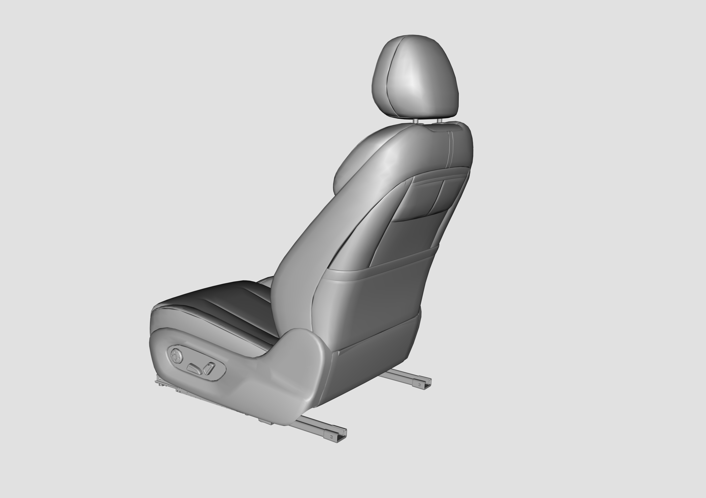
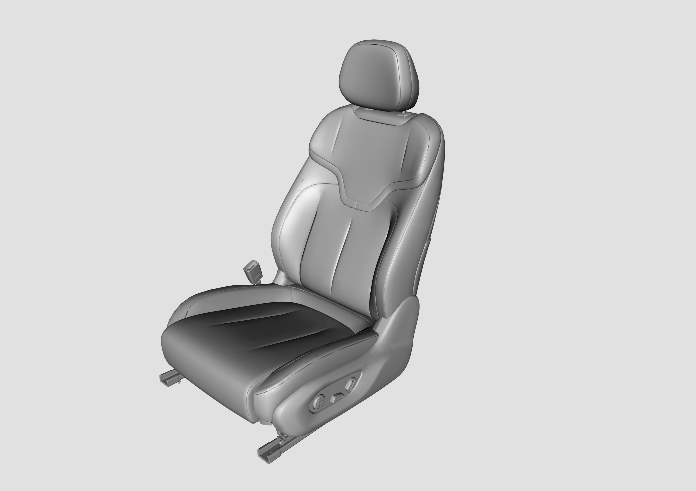
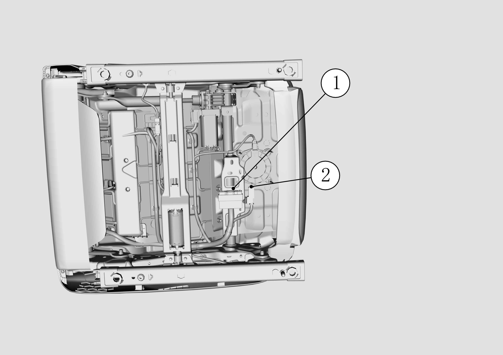

Снятие и установка узла передних сидений
Сначала сдвинуть сиденье в самое переднее положение, с помощью трещоточного ключа и торцевой головки № 11 выкрутить задние крепежные болты сиденья.

Затем сдвинуть сиденье в самое заднее положение, с помощью трещоточного ключа и торцевой головки № 11 выкрутить передние крепежные болты сиденья.

Отсоединить электрический разъем жгута проводов в нижней части сиденья, с помощью отвертки отщелкнуть фиксатор ① и фиксатор ② крепления жгута проводов кузова к сиденью и снять сиденье переднего ряда.

Установка выполняется в порядке, обратном снятию.